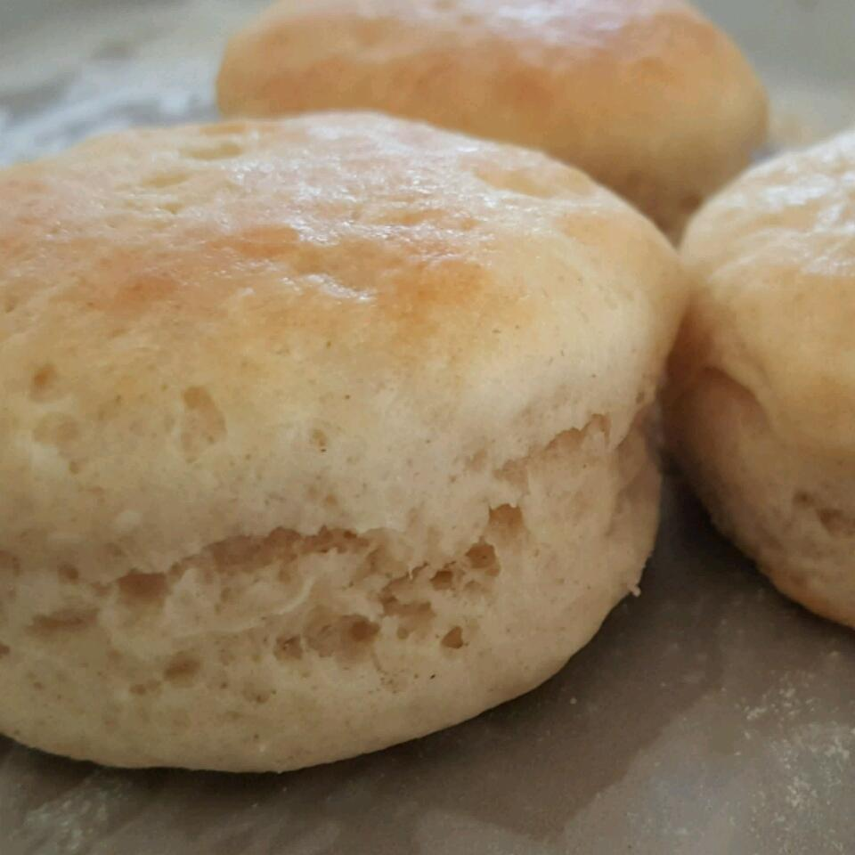

Biscuits Recipe

A delicious buttery biscuit, golden brown,
with a flaky crust.
A quick baked good you can enjoy on a night
in. Easy to make, you'll be able to share the joy with others as well. All you need is an oven.
Each biscuit had 206 calories, 3g of protein, 18.3g of carbs, and 13.4g of fat. The recipe will make a serving of 12. :)
Ingredients
- 2 1/4 cups of self-rising flour
- 3/4 cup shortening
- 1 cup of milk
Steps on How to Make
- Combine and mix ingredients together.
- Pour out on floured waxed paper.
- Pat the dough out with hands until dough is not sticky (add a little flour if necessary).
- Fold double, cut biscuits with a biscuit cutter.
- Bake on a cookie sheet at 425 degrees F for 20-25 minutes.
Home Page
Back to Top